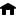

| Top |  |
GstStreamCollection *
gst_stream_collection_new (const gchar *upstream_id);
Create a new GstStreamCollection.
Since: 1.10
gboolean gst_stream_collection_add_stream (GstStreamCollection *collection,GstStream *stream);
Add the given stream
to the collection
.
Since: 1.10
const gchar *
gst_stream_collection_get_upstream_id (GstStreamCollection *collection);
Returns the upstream id of the collection
.
Since: 1.10
guint
gst_stream_collection_get_size (GstStreamCollection *collection);
Get the number of streams this collection contains
Since: 1.10
struct GstStreamCollection {
GstObject object;
};
A collection of GstStream that are available.
A GstStreamCollection will be provided by elements that can make those
streams available. Applications can use the collection to show the user
what streams are available by using gst_stream_collection_get_stream()
Once posted, a GstStreamCollection is immutable. Updates are made by sending a new GstStreamCollection message, which may or may not share some of the GstStream objects from the collection it replaces. The receiver can check the sender of a stream collection message to know which collection is obsoleted.
Several elements in a pipeline can provide GstStreamCollection.
Applications can activate streams from a collection by using the GST_EVENT_SELECT_STREAMS event on a pipeline, bin or element.
Since: 1.10